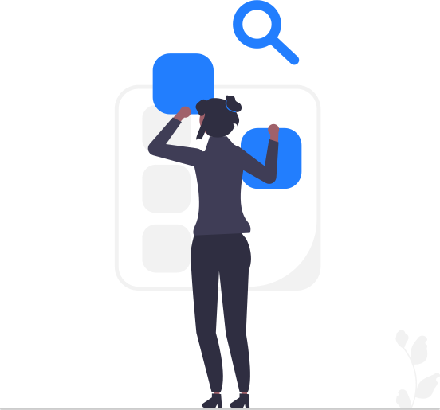

Current Research on Multiple Sclerosis
{{< lastupdate >}}How it works
Step 1 Search for Multiple Sclerosis
Gregory searches the web multiple times a day looking for Articles and Clinical Trials.
Step 2 Filter the noise
We use text analysis and machine learning to identify relevant articles to list on the home page and send to subscribers, for free.
Step 3 Communicate
Every 2 days the admin team tags the articles showing promise for new treatments and better quality of life for people with Multiple Sclerosis.
Every week doctors, researchers, and physical therapists receive a digest of new articles and clinical trials by email.



Annual Reports
We keep track of our activities and expenses for the sake of transparency. The report also includes extensive findings and use cases.
What we learned in 2021